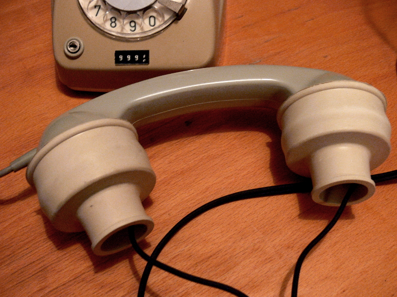
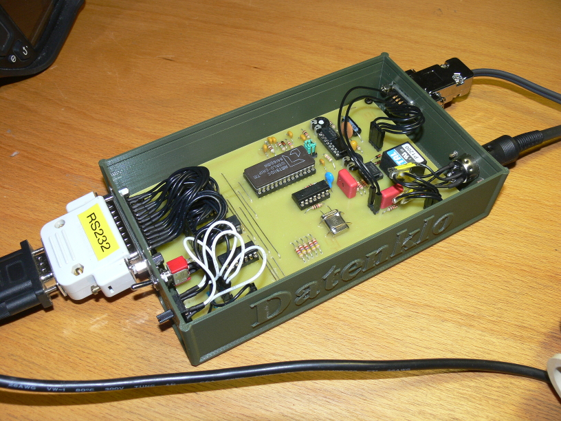

Das Datenklo

History
geschichte
name
was kann der chip
TBD

How it works
The program 'datenklo' is an emulator for the original "CCC modem", a building instruction released by the Chaos Computer Club in 1985.
The heart of this software is the AM7911 modem chip emulation.
It modulates digital levels to FSK tones and demodulates FSK tones to digital levels.
A software UART (serial transceiver) converts characters (bytes) into levels and leves into bytes.
The modem chip emulation is linked to sound card via ALSA driver.
The UART is linked to a tty emulation.
The tty emulation uses FUSE, so that the linux kernel provides a virtual serial interface. (/dev/ttyDATENKLO0 by default)
* TBD *
Setup of a terminal
* TBD *
[Back to main page]
|